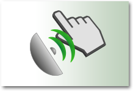
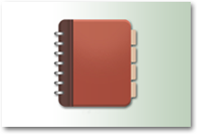

|  | CreateTrack your walk with GPS, or plan your route creating a path by hand |
SearchSearch for routes all over the world, or find one that starts near you |
|  | Saved RoutesRoutes you have created are saved here automatically |
Favourite RoutesMark a route as favourite to see it here. Quick access to your most used paths |
Notes & PhotosCreate notes and upload photos here. Notes and photos are visible to everyone unless set to private. |